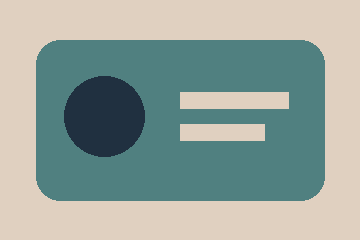
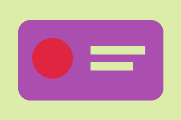
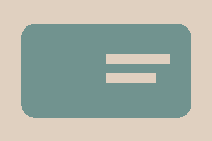

Reference

A controlled demonstration of palette and CSS token alignment. Shapes and composition stay the same. Passing these measurements does not establish artistic style or overall UI quality.



See report.json for measurements and ui.diff for the CSS changes.